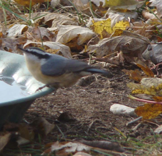

I was excited in winter of 2010-11 to see a red-breasted nuthatch come to my feeding station for sunflower seeds along with his flock-mates: chickadees, nuthatches, titmice and possibly a downy woodpecker. Although they were common in Maine where my family lived during the 1960s, this was the first I'd seen in Indiana.
The redbreasts are miniatures of the white-breasted nuthatch with these differences: the red-breasted has a black stripe through its eye, blue-gray back and wings and richly colored reddish underparts. The red-breasted is only four inches in length whereas the white-breasted is six inches long.
The red-breasted may migrate depending upon food supply. Its call is reported to be more nasal than the white-breasted nuthatch but higher in pitch. It is reported that redbreasts are more sociable than their white-breasted "cousins," vocalizing with one another incessantly. Its habitat is coniferous woods as opposed to the white-breasted's preference for deciduous.
The red-breasted nuthatch will nest in dead wood, often close to the ground, and they smear the entrance to the nest with pitch – clever bird!
Its feeding behavior is similar to the white-breasted, but it may also catch insects in mid-air. It is a more agile feeder, scooting up and down tree trunks and branches seeking insects, sometimes upside-down, and venturing out onto the tiniest twigs. It prefers the seeds of spruce and pine, deftly prying under the scales of the cones, prying open the scales and extracting the seeds.
